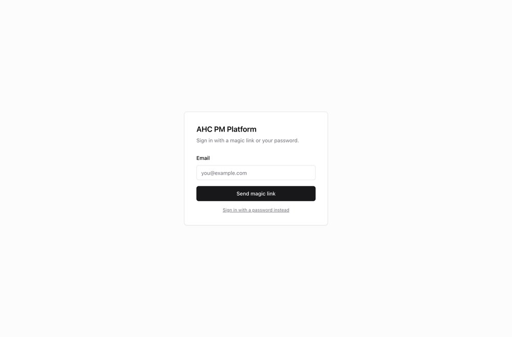
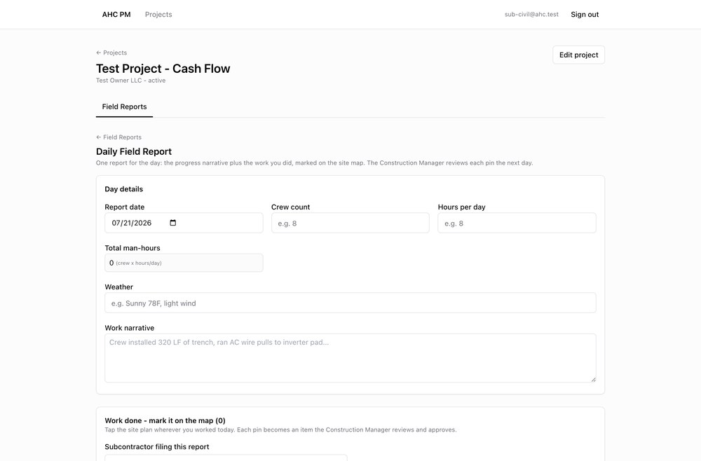
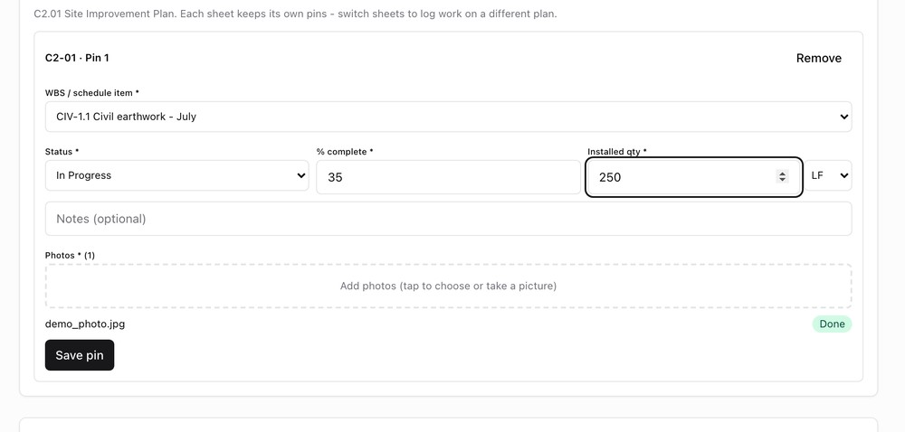
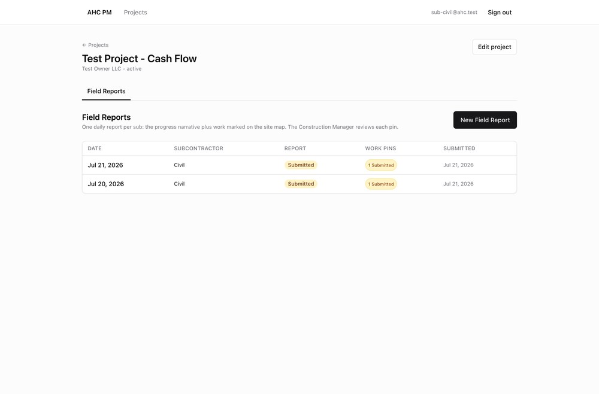

Thanks for helping us test the field-reporting side of our project platform. For the next three days, please use it the way a real civil subcontractor foreman would: at the end of each work "day," file one field report covering what your crew did, mark it on the site plan, and add photos. Our Construction Manager (Mark) will review and approve your work. We are hunting for anything confusing, broken, or slow. There are no wrong answers here - if something feels off, that is exactly what we want to know.
https://pm-platform-nine.vercel.appsub-civil@ahc.testSubCivil2026!On the sign-in screen, click "Sign in with a password instead," then enter the email and password above. Please change the password after the test.
Every work day is one report. You describe the day, drop pins on the site plan for the work you did, attach photos, and submit. That is it. Here is the full walk-through - do it in order the first time.
Go to the website, choose Sign in with a password instead, and log in with your email and password.

Open Test Project - Cash Flow, go to the Field Reports tab, and click New Field Report (top right).
Set the report date, crew count, and hours per day (total man-hours calculates itself). Add the weather and a short work narrative of what the crew accomplished.

Under Work done - mark it on the map, pick Civil in the "Subcontractor filing this report" dropdown. Then tap the site plan wherever your crew worked - a pin drops. You can switch sheets (C1-01, C2-01, and so on) to mark work on a different plan.
Each pin is one piece of work tied to a schedule item. Pick the WBS / schedule item, a status, % complete, and the installed quantity with its unit (LF, EA, and so on). Add at least one photo, then click Save pin. A saved pin turns green and shows Saved.

Below the map you can add equipment on site, deliveries, delays, and any safety incident or near miss. Skip these on day 1 if you want, but please exercise them by day 2.
Click Submit Field Report. Your report now shows Submitted and moves to Mark for review.

Mark (the Construction Manager) reviews each pin, attaches his own verification photo, and either approves or rejects it. If he rejects a pin, it bounces back to you with a reason - fix it and re-submit. When he approves, your reported progress flows onto the project schedule. You do not need to do anything to trigger his review.
Aim for a few reports each day so we cover the normal loop plus the messy real-world cases. File reports on different dates (you can back-date the report date) so we can test how corrections behave.
| Day | What to do | What we are checking |
|---|---|---|
| Day 1 Jul 21 |
File one clean report end-to-end: day details, one pin with a photo, submit. Then check the Field Reports list shows it as Submitted. | The basic loop works and is easy to follow the first time without help. |
| Day 2 Jul 22 |
File a report with two or three pins on different parts of the plan. Add an equipment row, a delivery, and a delay. On one report, tick Near miss and write a safety note. Try editing a saved pin before submitting. | The extra sections work, editing a pin works, and safety flags are obvious. |
| Day 3 Jul 23 |
File a correction: report the same schedule item again on a later date with a lower % complete than before. Try marking work across two different sheets in one report. Re-submit anything Mark rejected. | Corrections and rejections flow back cleanly, and multi-sheet reports hold together. |
When something is confusing, broken, or just annoying, jot it down. The more detail the better. For each issue, note:
| # | Date / time | What you were doing | What you expected | What actually happened | Phone or computer? |
|---|---|---|---|---|---|
| 1 | |||||
| 2 | |||||
| 3 | |||||
| 4 | |||||
| 5 |
A screenshot is worth a thousand words - on most phones, press the side + volume buttons; on a Mac, Shift+Cmd+4. Send your notes and screenshots to Phil at the end of each day.